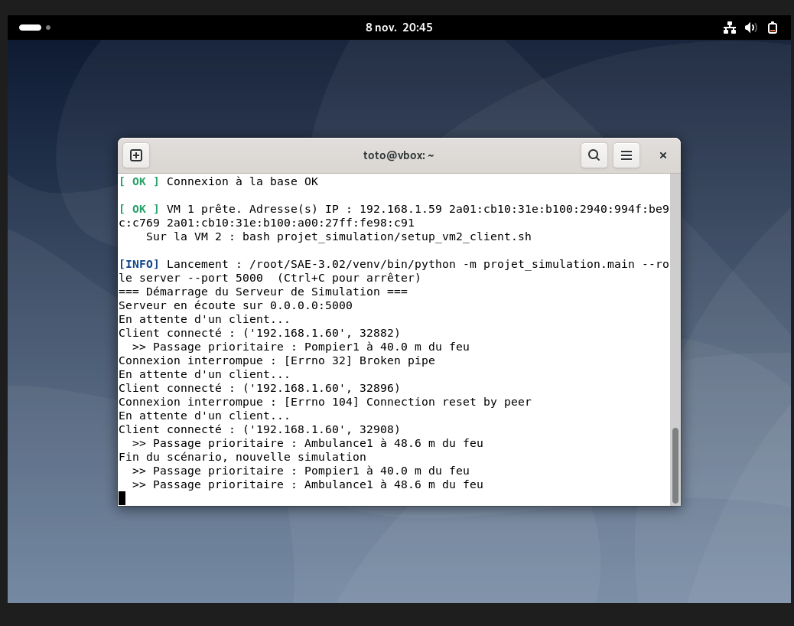
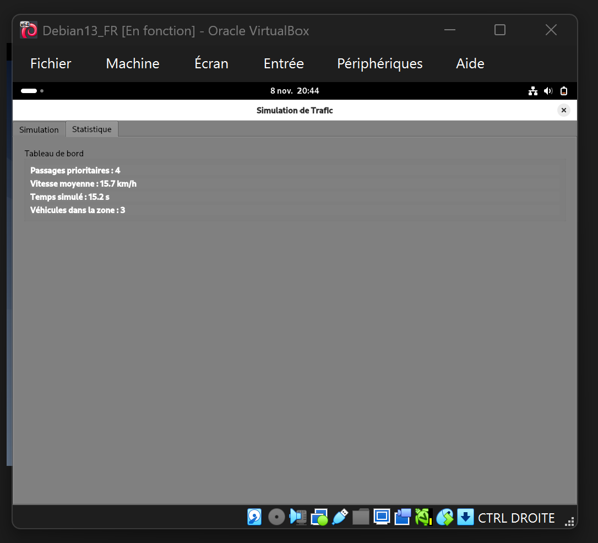
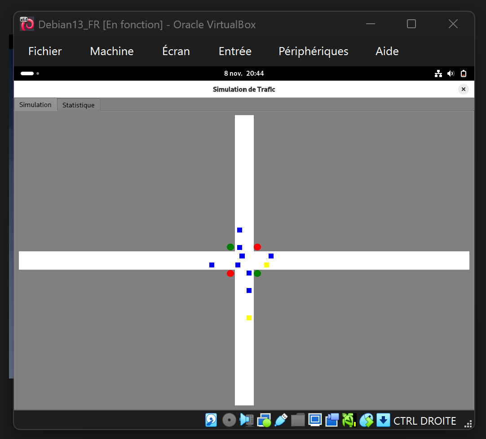
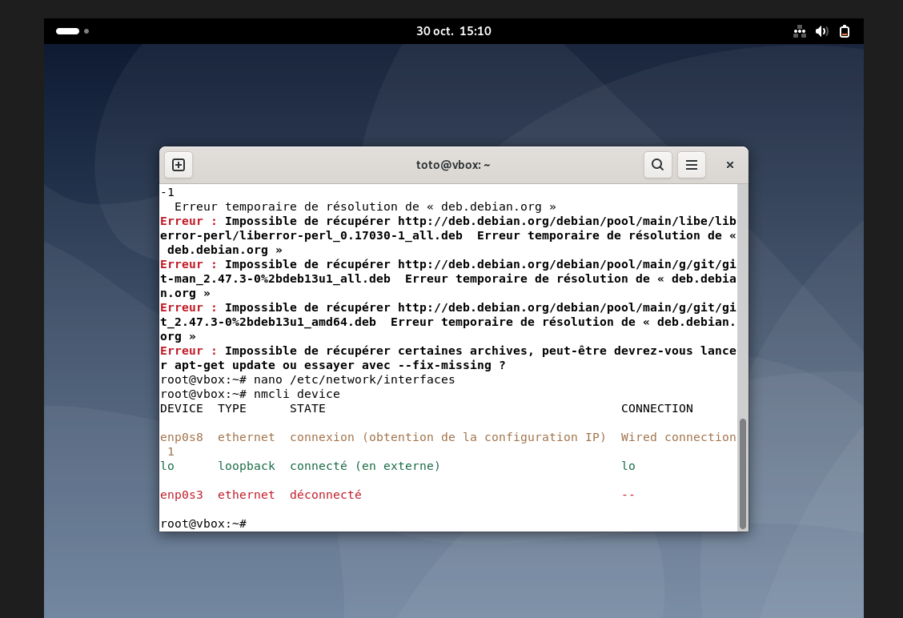
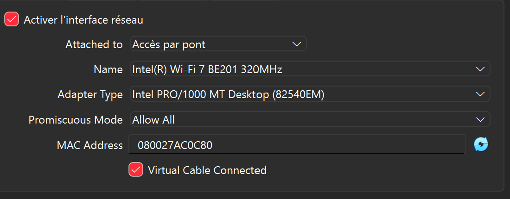
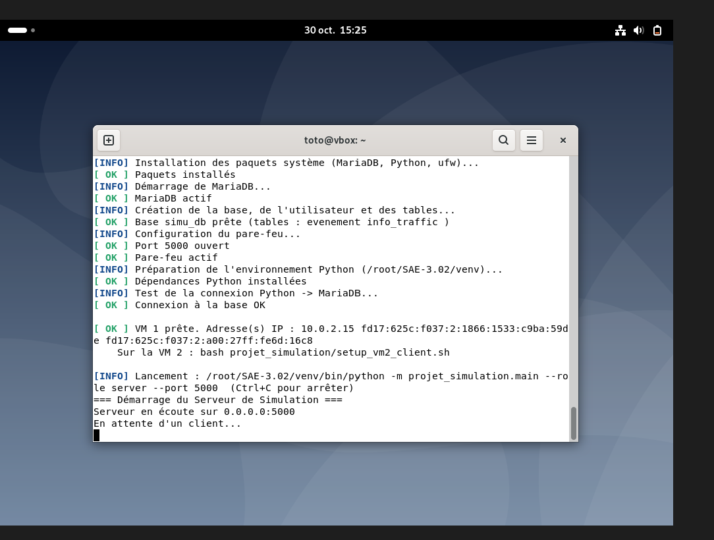
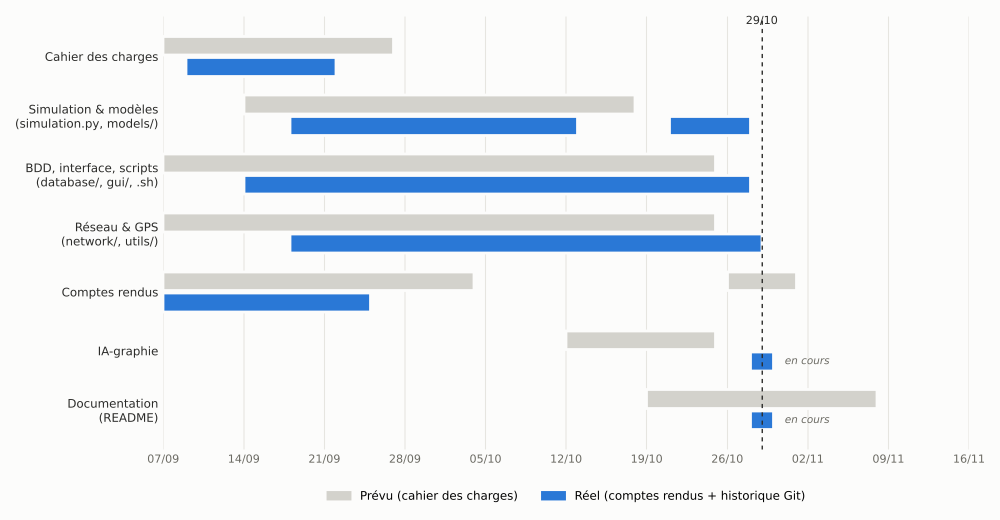

Distributed Traffic Simulation — Emergency Vehicle Priority
Python · PyQt6 · MariaDB · TCP Sockets · VirtualBox · Debian · Bash · Git
A connected-crossroads mock-up for a fictitious client in charge of emergency vehicles: when a fire truck or an ambulance comes within 50 m of a traffic light, the light turns green automatically. The application runs on two Debian virtual machines: VM 1 computes the simulation, stores statistics in MariaDB and streams the state over TCP; VM 2 displays the live map and dashboard in PyQt6. Team project by group Zero Trust (3 students), September to late October 2026.
Architecture and team roles
Both VMs deployed with Bash scripts me · Green = my work
| Member | Responsibility (specifications) |
|---|---|
| Benjamin Deiber (me) | Database (database/), graphical interface (gui/), deployment scripts (setup_vm1_server.sh, setup_vm2_client.sh), GitHub repository and documentation — then final integration |
| Lucas Bucher | Object models (models/) and simulation engine, documentation |
| Quentin Altinok | TCP networking (network/) and GPS computations (utils/), documentation |
Create IT tools and applications for networks & telecoms
1 Context & professional situation
I was the developer of two components of a three-person client/server application: data persistence (MariaDB on VM 1) and the user interface (PyQt6 window on VM 2). Our specifications set the frame: PyQt6 for the interface, mysql-connector-python for the database, JSON over TCP. My part had to plug into code written by two teammates that I did not control: Lucas's simulation produces the data, Quentin's network client carries it to my interface.
2 Targeted critical learnings (AC)
Installer, administrer un système de gestion de données(Install and administer a data management system.) I designed the
simu_db schema (evenement and info_traffic tables), created a dedicated simu_user account with rights limited to that database, and automated the MariaDB installation on VM 1 in the deployment script.Accéder à un ensemble de données depuis une application et/ou un site web(Access a dataset from an application and/or a website.) My
StatsDB class lets the Python application record every priority passage and the traffic metrics, then read back the indicators (number of emergencies, average speed) shown on the dashboard.Utiliser un protocole réseau pour programmer une application client/serveur(Use a network protocol to program a client/server application.) The TCP server is Quentin's work; my part is on the client side: connecting the TCP client, which runs in a
QThread, to the interface through Qt signals, and enforcing the “one full JSON state per line” protocol so the map can read it. I also added a clean shutdown of the thread when the window closes.Développer une application à partir d'un cahier des charges donné, pour le Web ou les périphériques mobiles(Develop an application from given specifications, for the Web or mobile devices.) The interface was built from our specifications (PyQt6, crossroads map, statistics dashboard).
3 Reflective description
What I did. I wrote schema.sql and stats_db.py, then the interface: the tabbed window (main_window.py), the dashboard (stats_panel.py) and the map (map_canvas.py), which converts the GPS positions sent by the server into pixels and puts each vehicle in its right-hand lane.
Method. I first developed each part on its own with test data, as decided in weekly report 3. From 18 October, I had the whole repository reviewed and ran every entry point (standalone simulation, server, client) after each update to catch integration errors.
Difficulties and solutions.
stats_db.py called connect(self.config) instead of connect(**self.config), and the table names in the queries did not match the schema. I aligned both files, and added COALESCE(AVG(...), 0) because an empty table returned NULL, displayed as “None km/h”.from map_canvas import … worked when running the file but crashed through main.py. Likewise, my window expected a data_received signal while Quentin's client emitted state_received.What I learned. One person's code is rarely the problem: the contact points (signal names, JSON format, parameters) are what break. I also learned to delegate a code review to an AI (Claude) without delegating the decisions: I applied, tested and sometimes rejected its suggestions (for instance, I chose to make the database mandatory rather than optional). This use is declared in the project's AI log (IA-graphie).
4 Evidence
stats_db.py aligned (table names, timestamps).info_traffic table.CREATE TABLE IF NOT EXISTS evenement ( id INT AUTO_INCREMENT PRIMARY KEY, timestamp DATETIME DEFAULT CURRENT_TIMESTAMP, vehicule_id VARCHAR(50) NOT NULL, feu_id VARCHAR(50) NOT NULL, distance FLOAT NOT NULL );
lire_kpis method (my file)def lire_kpis(self): query_urgences = "SELECT COUNT(*) FROM evenement" query_vitesse = "SELECT COALESCE(AVG(vitesse_moyenne), 0) FROM info_traffic" kpis = {"nb_urgences": 0, "vitesse_moyenne": 0.0} connection = self.get_connection() cursor = connection.cursor() cursor.execute(query_urgences) ...
# Lier le signal Sockets de Quentin s'il existe if self.socket_client: self.socket_client.state_received.connect(self.donne_recu) def donne_recu(self, data): self.canvas.update_data(data) self.stats_panel.update_kpis(data.get("kpis", {}), data.get("temps", 0))
decalage = int(3.5 * e) # pour mettre la voiture sur sa voie et pas au milieu de la route for v in self.data.get("vehicules", []): x, y = self.gps_vers_ecran(v.get("lat", 0), v.get("lon", 0)) sens = v.get("sens", 1) if v.get("axe") == "x": y = y + sens * decalage else: x = x + sens * decalage



Administer networks and the Internet
1 Context & professional situation
Our specifications required deployment on two Linux virtual machines, installed automatically by scripts. I was in charge of these scripts and of setting up the VMs. The task was to prepare a demo environment for a client: a server (database, firewall, TCP service) and a client workstation with a desktop, which must talk to each other while also reaching the Internet to install themselves.
2 Targeted critical learnings (AC)
Déployer des postes clients et des solutions virtualisées adaptées à une situation donnée(Deploy client workstations and virtualised solutions suited to a given situation.) I deployed two Debian VMs suited to their role: VM 1 as a server (MariaDB, ufw firewall, service on port 5000), VM 2 as a client workstation with the GNOME desktop for the interface. The network fits the situation: a NAT adapter for Internet access, a bridged adapter for traffic between the two VMs.
en utilisant une approche rigoureuse pour la résolution des dysfonctionnements(Using a rigorous approach to troubleshooting.) Carrying out this task revealed a series of failures (hypervisor, network adapter, addressing, display), which I solved layer by layer, from logs and diagnostic commands.
3 Reflective description
What I did. Two scripts, setup_vm1_server.sh and setup_vm2_client.sh, which install everything and start the application. They separate a root phase (packages, MariaDB, firewall) from a user phase (Python environment, launch), and can safely be re-run. The firewall allows SSH before enabling itself (so remote access is not cut off), opens port 5000 and keeps port 3306 closed, since only VM 1 uses the database. The VM 2 script finds the server on the local network on its own.
My part and the AI's. The structure of these scripts was generated with AI assistance; my work was to integrate them into the repository, adapt them as the project evolved, and above all make them actually work on the VMs, where all the problems below appeared. And, finally, to understand them.
nmcli device showed the NAT adapter enp0s3 disconnected and the second adapter stuck on “getting IP configuration”: a VirtualBox “internal network” hands out no addresses. I reconnected the NAT adapter and switched the second one to “bridged adapter”.10.0.2.15, the NAT address that every VM gets, isolated from the others: the 192.168.56.x host-only address was needed.su: that shell does not know the GNOME session's display. It must be run as the user logged into the desktop.What I learned. Troubleshooting layer by layer — hypervisor, virtual adapter, IP address, DNS resolution, service — and reading logs before acting. The VMs ended up running Debian 13, while the documentation targeted Debian 12: the packages used exist in both versions.
4 Evidence
.gitattributes to keep scripts with Linux line endings.ufw allow 22/tcp # SSH first, or we lock ourselves out if [[ -n "$IP_CLIENT" ]]; then ufw allow from "$IP_CLIENT" to any port "$PORT" proto tcp else ufw allow "$PORT"/tcp fi # Port 3306 deliberately closed: only VM 1 uses the database ufw --force enable



Connecting businesses and users
1 Context & professional situation
In group Zero Trust, I was responsible for the shared GitHub repository and part of the documentation, according to the deliverables table of our specifications. In practice I also handled final integration: checking that the three members' parts work together, reporting gaps and coordinating fixes — like an integrator or technical project lead who must deliver by a date set by the client.
2 Targeted critical learnings (AC)
Organiser un projet pour répondre au cahier des charges(Organise a project to meet the specifications.) I organised the repository by modules, tracked progress against the milestones of the specifications, and ordered the integration into steps (database, imports, simulation, server, client, entry point, display) to deliver a mock-up that meets the client's need.
Travailler en équipe pour développer ses compétences professionnelles(Work as a team to develop one's professional skills.) Integration forced me to read and understand Lucas's and Quentin's code, to explain clearly what was blocking, and to respect their choices when they worked (we kept Quentin's server loop and his signal name).
3 Reflective description
What I did. I created the repository (weekly report 1), set up the module layout and, from 18 October, ran a full analysis after each significant update to list problems by severity and propose a fixing order. When the server did not match what the rest of the program expected, I sent Quentin a message describing the expected contract precisely (ServeurSimulation class, 0.0.0.0 address, one JSON state per line, a test command): he delivered a compatible version that same evening. I wrote the README, requirements.txt and the project report.
What I learned. Organising a project is not just splitting tasks: you have to organise where they meet. Next time I would plan an “integration and testing” part in the Gantt chart from week 4, and pull-request reviews.
4 Evidence
debenji68).
Intellectual honesty: use of AI
I used a generative AI (Claude) from 18 October for code reviews, integration fixes, deployment scripts and documentation. I did not let the AI make decisions for me: choosing between options, testing on VMs and troubleshooting are my own work. The prompts and their critical analysis are detailed in the project's AI log (IAGraphie.pdf, at the root of the repository).